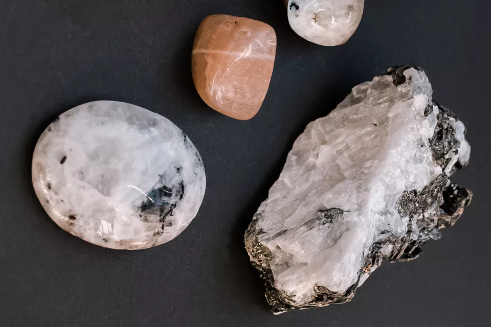

Through the use of Crystals and Gemstones, one's life can feel more balanced. Used in meditation, decor around the house, or on your body in the form of jewelery, the power shines through. One of my favourite crystals is Moonstone. Moonstone is a stone of inner growth and strength. It soothes emotional instability and stress, and stabilises the emotions, providing calmness.
| Chakra | Colour Associated | Crystals |
|---|---|---|
| Crown | Purple | Amethyst, Clear Quartz |
| Third Eye | Indigo | Black Obsidian |
| Throat | Blue | Turquoise, Lapis Lazuli |
| Heart | Green | Green Aventurine, Rose Quartz |
| Solar Plexus | Yellow | Calcite, Citrine |
| Sacral | Orange | Carnelian, Moonstone |
| Root | Red | Bloodstone, Tiger Eye |